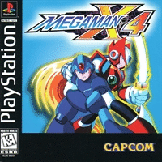

Mega Man X4 Dublado

Mega Man X4 é o quarto jogo da franquia Mega Man X. Foi originalmente lançado em 1º de agosto de 1997 para o Sega Saturn e PlayStation. Foi relançado em 10 de janeiro de 2006 como parte do jogo Mega Man X Collection para GameCube e Playstation 2.